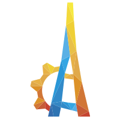

Strona Główna
Szkoła
Projekt Stażu
Prezentacja
Opis Strony
Projekt stażu technicznego informatyka
Twój krok w przyszłość
Rozwiń swoje kompetencje w dynamicznym świecie IT. Staż techniczny informatyka to szansa na zdobycie
doswiadczenia, rozwój umiejętności i wzmocnienie swojej ścieszki kariery.
Dowiedz sie wiecej
Sprawdź Kierunek